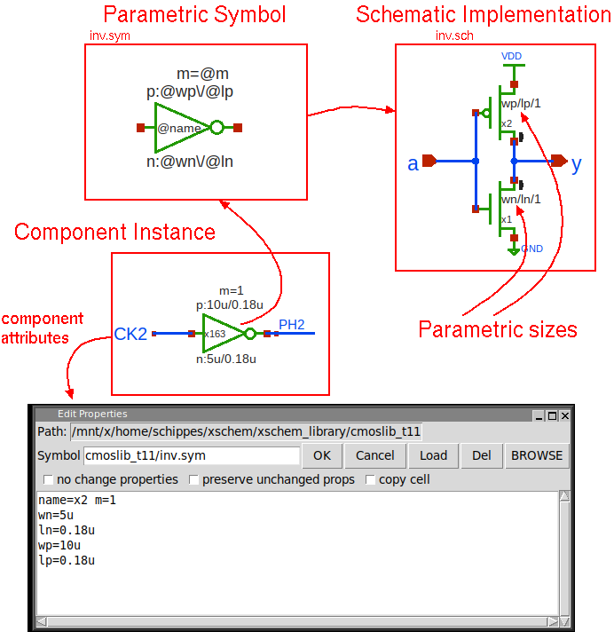

PREV
UP
NEXT
INSTANCE ATTRIBUTES, PARAMETRIZED SUBCIRCUITS
- A symbol may have any sort of parameters that can be specified when placing an instance of it in a schematic.
- Example: inverter with variable W/L dimensions for p and n transistors.
- Parameters enable circuit reuse (think of variable width registers, variable size RAMs, variable strength buffers).
- Symbol may show parameters using the @param notation, @param is then expanded with the actual 'param' value
set as attribute in the component instance.
- Attributes may be used in multiple level hierarchies. No single-level restriction.
